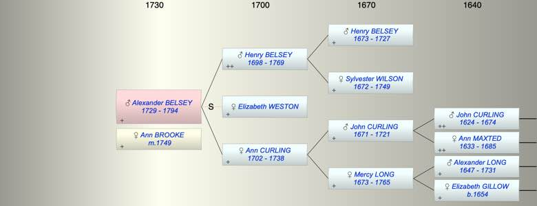

| [Index] |
| Alexander BELSEY (1729 - 1794) |
|  |
| b. 1729 at Coldred |
| m. 10 May 1749 Ann BROOKE at St George, Canterbury |
| d. 1794 at Lydden aged 65 |
| Parents: |
| Henry BELSEY (1698 - 1769) |
| Ann CURLING (1702 - 1738) |
| Siblings (3): |
| John BELSEY (1724 - 1803) |
| Henry BELSEY (1726 - 1797) |
| George BELSEY (1727 - 1796) |
| Events in Alexander BELSEY (1729 - 1794)'s life | |||||
| Date | Age | Event | Place | Notes | Src |
| 1729 | Alexander BELSEY was born | Coldred | Note 1 | ||
| 1738 | 9 | Death of mother Ann CURLING (aged 36) | Lydden | Note 2 | |
| 10 May 1749 | 20 | Married Ann BROOKE | St George, Canterbury | Note 3 | |
| 1769 | 40 | Death of father Henry BELSEY (aged 71) | Lydden | Note 4 | |
| 1794 | 65 | Alexander BELSEY died | Lydden | Note 5 | |
| Personal Notes: |
| children on FS |
| Created on a Mac™ using iFamily for Mac™ on 8 Oct 2023 |